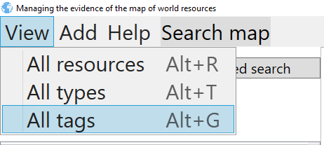
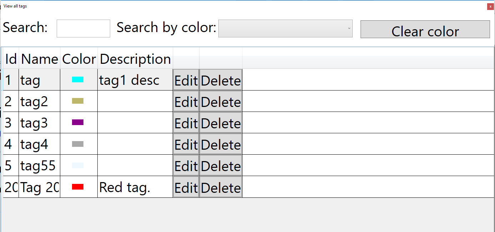
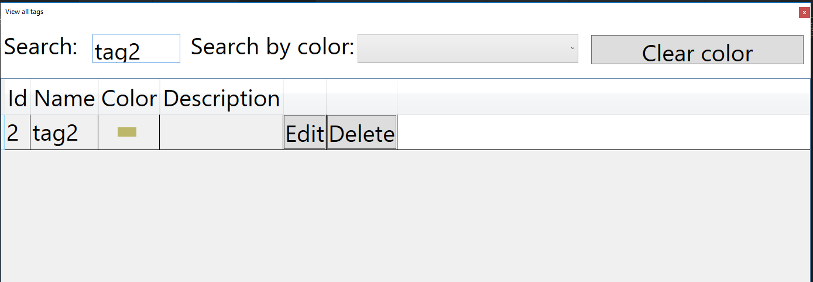

View all tags
You can overview all tags in table view. Process of overviewing should start with pressing button View->All tags, or by pressing shortcut key combination ALT+G

That action will open window that looks like this:

You can search tags using search field on top.

There are options for editing and deleting tags.